Fotos automáticas a tamaño de teléfono (Chrome móvil) de cada web pública. #E8B84B (hora de Cuba).
PARCIAL
Mi Negocio: NO se confirmó su contenido (sin marcador: Tu código de administrador) · Mercado: cargó y mostró su contenido · La paginita: cargó y mostró su contenido · La paginita · chat del agente: cargó y mostró su contenido · Mi Mercado: cargó y mostró su contenido · Mercado recorrido entero: Ahora, Analista, Equilibrio, Demanda, Promos, Historial, Avisos (7 de 7 pantallas).
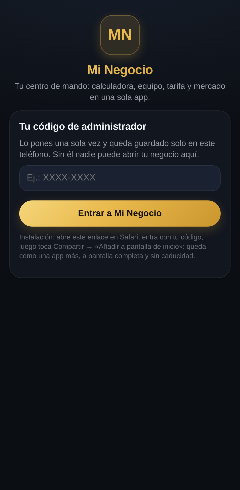
Mi Negocio — SOLO la puerta: el código del dueño no viaja a ningún robot. La carga y la puerta ya cazan errores reales.
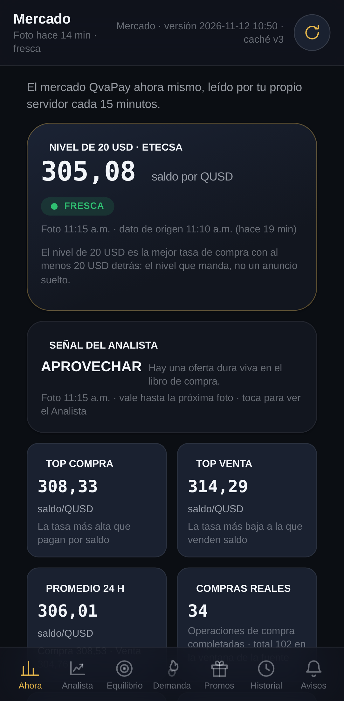
Mercado · Ahora — el panel del mercado QvaPay con sus datos en vivo.
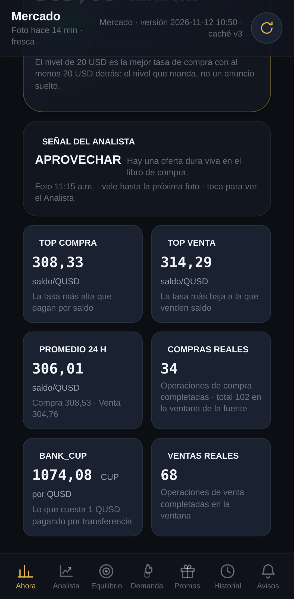
Mercado · Ahora — la misma pantalla, un poco más abajo.
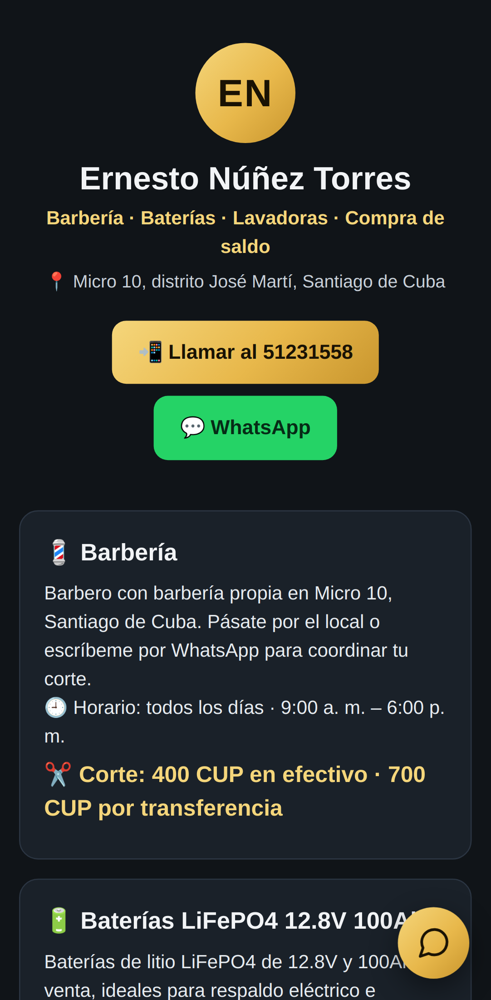
La paginita — la tarjeta pública del negocio (barbería, baterías, lavadoras y compra de saldo).
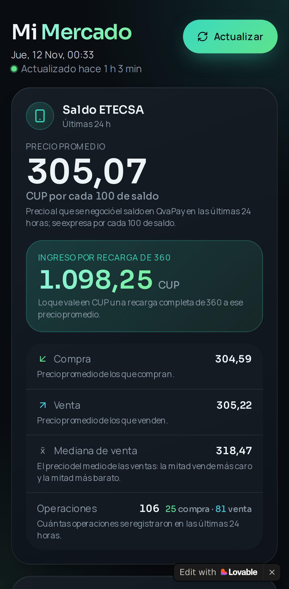
Mi Mercado (Lovable) — el conversor alimentado por los datos del vigía.
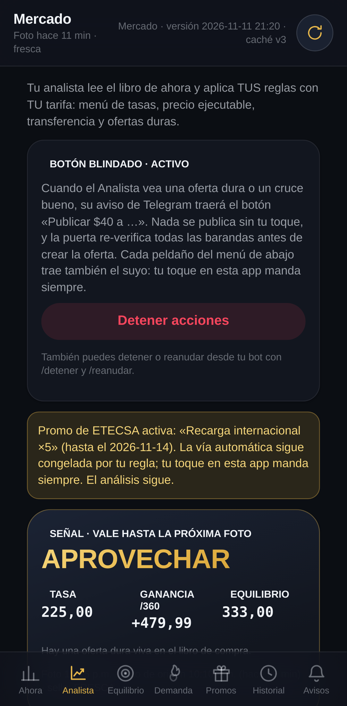
Mercado · Analista — recorrido completo de bautizo del ojo web.
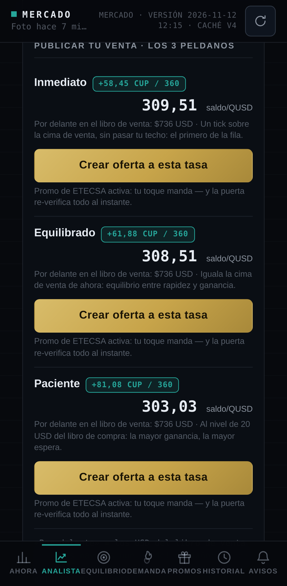
Mercado · Analista — un poco más abajo.
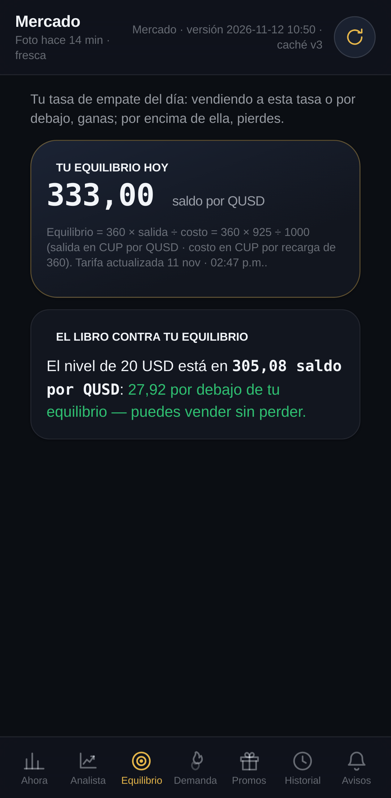
Mercado · Equilibrio — recorrido completo de bautizo del ojo web.
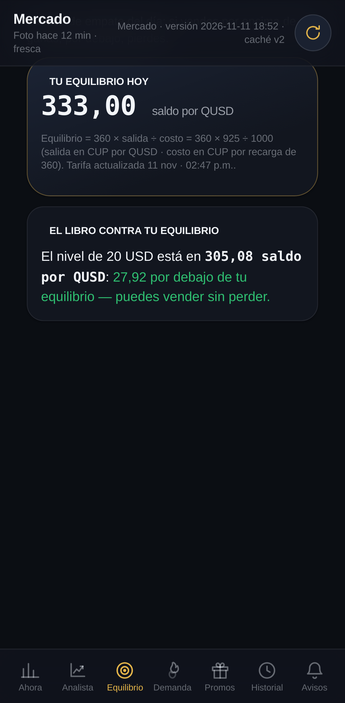
Mercado · Equilibrio — un poco más abajo.
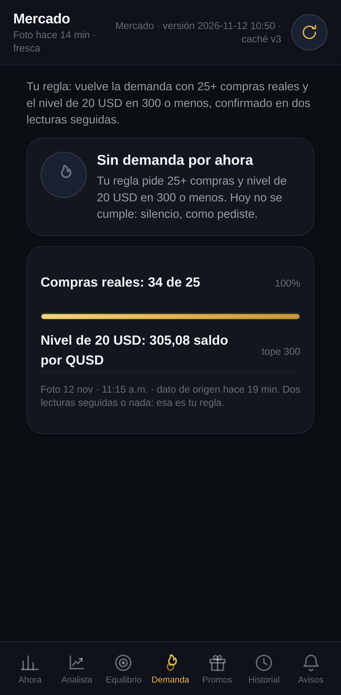
Mercado · Demanda — recorrido completo de bautizo del ojo web.
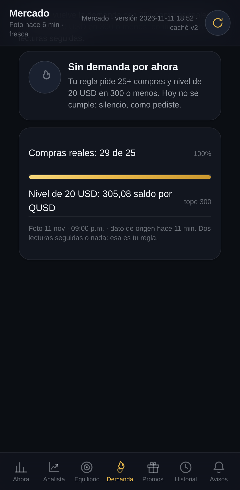
Mercado · Demanda — un poco más abajo.
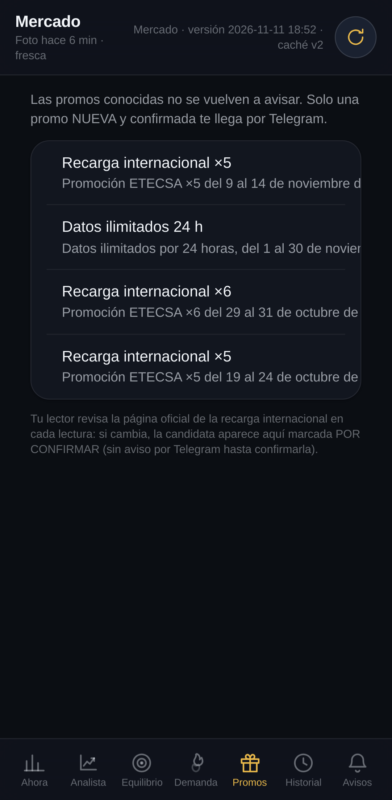
Mercado · Promos — recorrido completo de bautizo del ojo web.
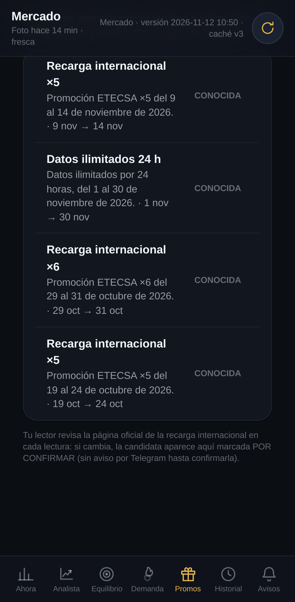
Mercado · Promos — un poco más abajo.
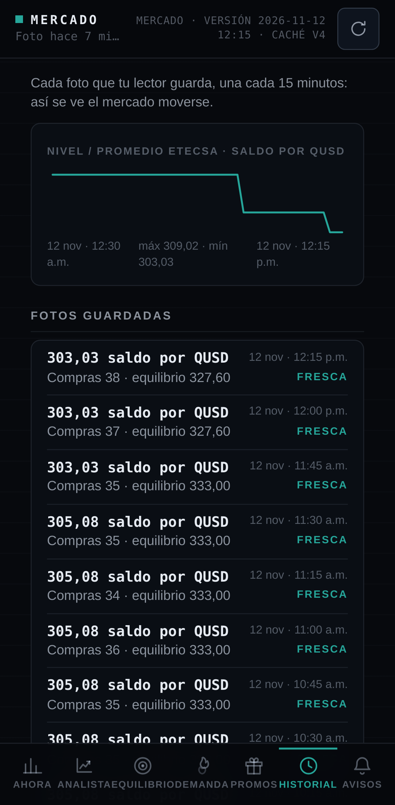
Mercado · Historial — recorrido completo de bautizo del ojo web.
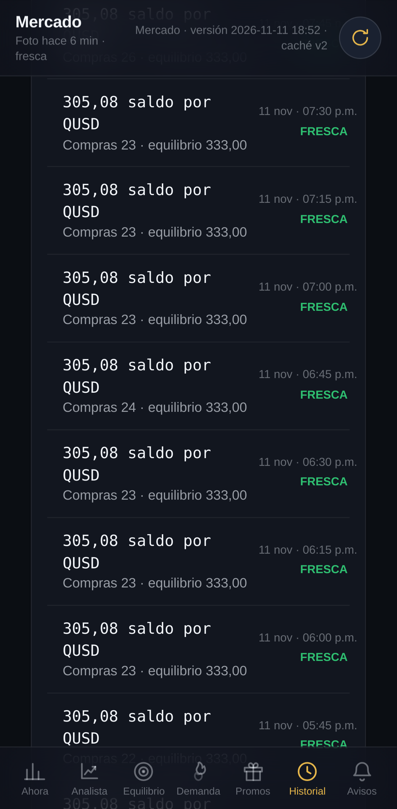
Mercado · Historial — un poco más abajo.
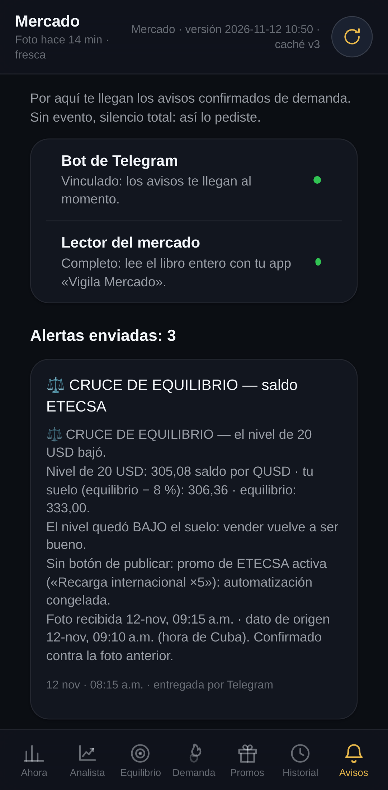
Mercado · Avisos — recorrido completo de bautizo del ojo web.
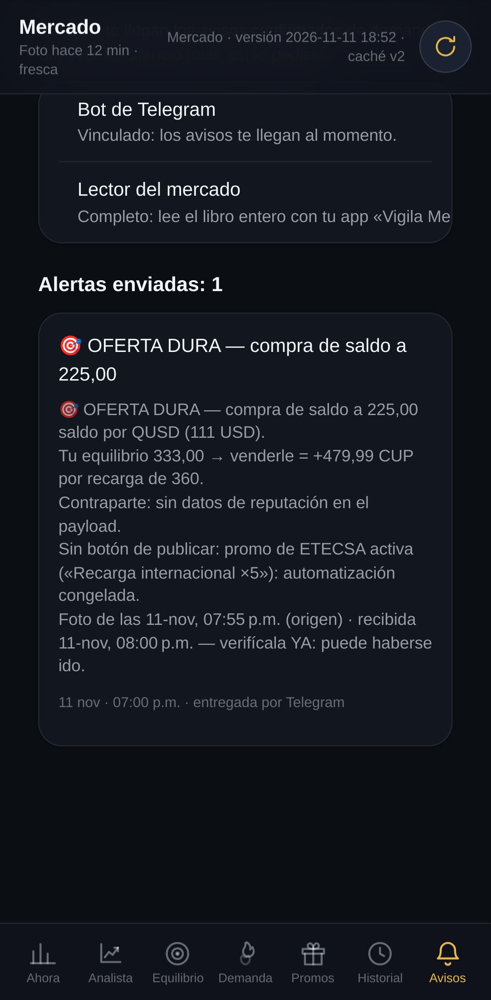
Mercado · Avisos — un poco más abajo.
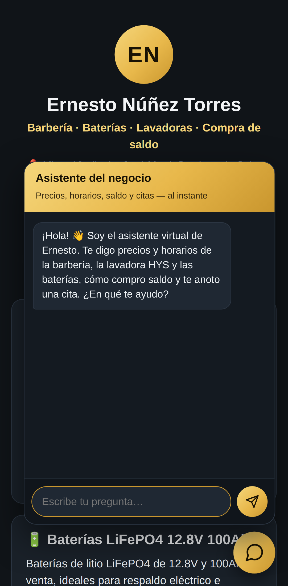
La paginita con el chat del agente ABIERTO — la burbuja de atención a clientes recién montada, fotografiada en su bautizo.
Alcance honesto: «Mi Negocio» se fotografía solo hasta su puerta — el código del dueño no viaja a ningún robot; la carga y la puerta ya cazan errores reales. Esto es un navegador de mentira en un servidor: caza errores de carga y de diseño antes de que los vea un cliente; la prueba final sigue siendo el teléfono de verdad.